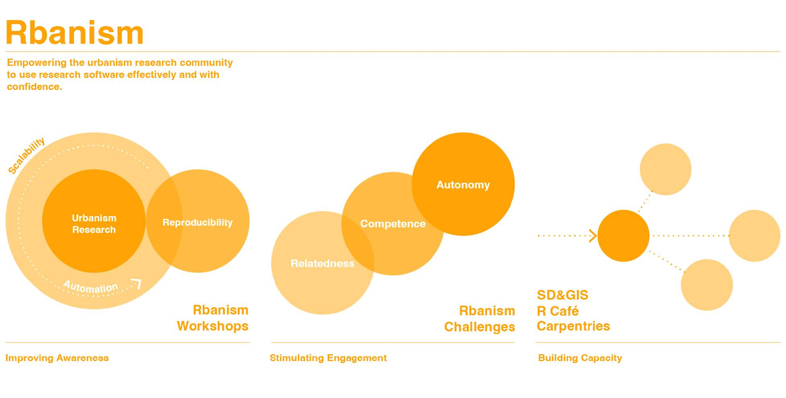

Rbanism is a dynamic community of practice that aims to empower urbanism students, researchers, and practitioners to use open-source software and open science practices to answer urban questions effectively and with confidence. Born from a passionate group of R users from the Department of Urbanism at TU Delft in the Netherlands, Rbanism is on a mission to expand on the international stage.
Principles and goals
The Rbanism community aims to empower urbanism researchers, students, educators and practitioners to use open-source software and related open-science practices effectively and with confidence. It raises awareness, stimulates engagement and builds capacity by demonstrating the benefits of reproducibility, automation and scalability for urbanism research, education and practice. The community is initiated by a group of R users in the Department of Urbanism at TU Delft, and it has the ambition to scale up to a larger national and international Rbanism community.
Our mission is to build and sustain digital competence and skills for reproducibility, automation and scalability, in the urbanism research and education community. We cultivate scientific computing, data science, computational thinking and software management skills, through peer exchange in a growing network. To that end, our activities include workshops, many of which are carried out as part of the Carpentries, hackathons and challenges, as well as various community gatherings. We organise both offline and online events to ensure the exchange of knowledge and experiences with our international community members. These various forms of engagement follow our commitment to inclusion and accessibility.

Why reproducibility, automation and scalability?
Reproducibility: Reproducibility is essential for result validation in urban research. By using the R programming language, it is possible to create a working environment where analysis results, models, and data processing can be easily reproduced by others or in the future. This is achieved by organizing and documenting source code, datasets used, and procedures adopted, enabling others to understand, verify, and replicate the same steps to obtain consistent results.
Automation: Automation allows for the automation of complex and repetitive processes in urban research. By using the R programming language, researchers can develop scripts and programs that automate data processing, visualization creation, and report generation. This saves valuable time for researchers and reduces human errors, improving overall research efficiency.
Scalability: Scalability is crucial for addressing complex urban challenges that require processing large amounts of data. The R programming language provides tools and packages that allow for working with large datasets, distributing processing across computer clusters, and optimizing analysis performance. This enables researchers to tackle larger-scale challenges and achieve fast and efficient results in urban research.
Overall, automation, reproducibility, and scalability, facilitated by digital skills like the R programming language, offer a range of benefits to urban research. Automation speeds up processes and reduces errors, reproducibility ensures result validity, and scalability allows for addressing complex challenges. The use of R as a programming language provides powerful tools to implement these key functionalities, improving the efficiency and accuracy of urban research and opening new opportunities for analysis and discovery.
Members
While Rbanism originated as an academic initiative, our community is open to anyone who wishes to join and expand our network. We primarily cater to individuals who are passionate about or professionally involved in urban research and its implementation through the use of new digital skills, such as the R programming language. Our community gatherings and initiatives aim to foster connections among those in the realms of education, research, and professional practice
Our community thrives with a vibrant mix of students, researchers, educators, and practioners - a melting pot of young minds, driven explorers, inspired teachers, and talented professionals.
Visual Identity
Our logo is the cornerstone of our identity, the primary visual element that defines and represents us. It serves as the essence of our community, Rbanism, which consists of dedicated urbanist researchers. We deliberately chose a generative logo to symbolize the dynamic nature of our field and the continuous innovation that defines our community. It reflects the ever-evolving landscape of urbanism and mirrors our commitment to fostering connections among our members through a diverse range of planned events. Moreover, the choice of a generative logo aligns with the individuality and diverse approaches within our community. Each member brings their unique perspective and utilizes the power of the R programming language, as well as other cutting-edge digital technologies, to enhance urban research. Our logo serves as a visual representation of this shared spirit of exploration and the synergies created through the fusion of expertise. In summary, our logo stands as the vital visual emblem that encapsulates the essence of Rbanism - a dynamic community of urbanist researchers continuously pushing the boundaries of knowledge and leveraging digital tools to enrich urban research.